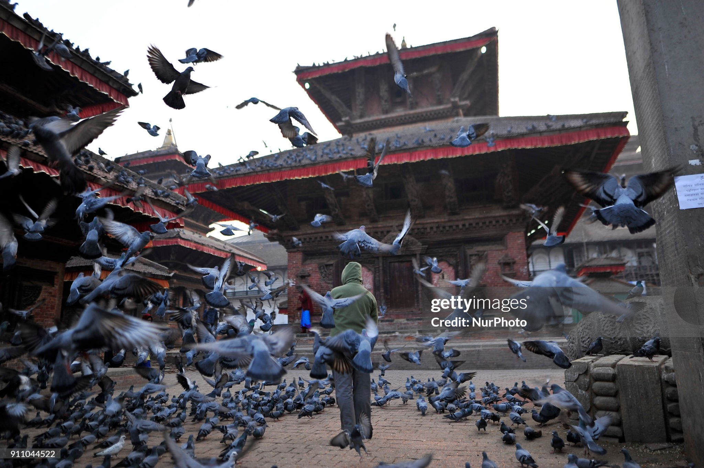
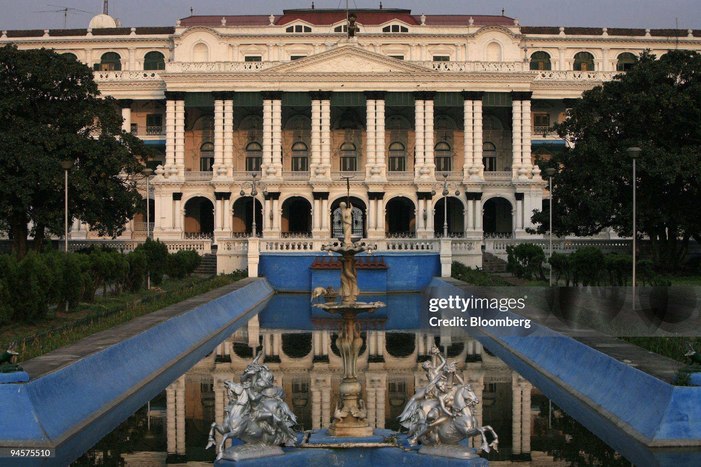
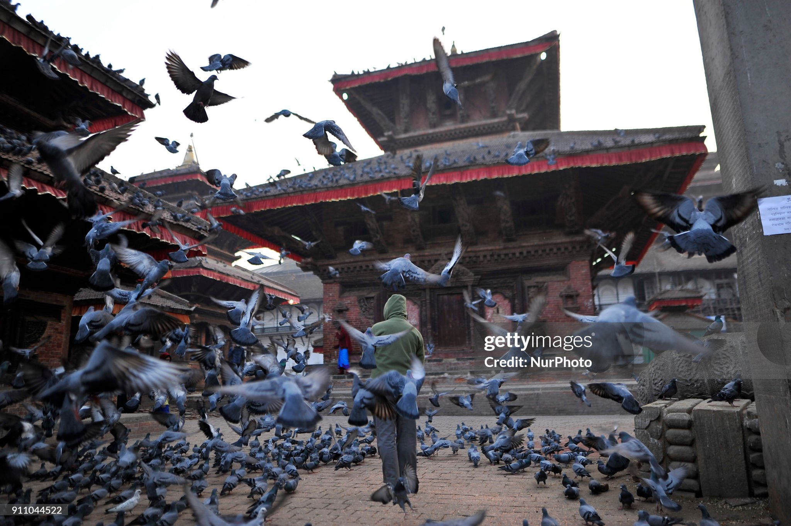
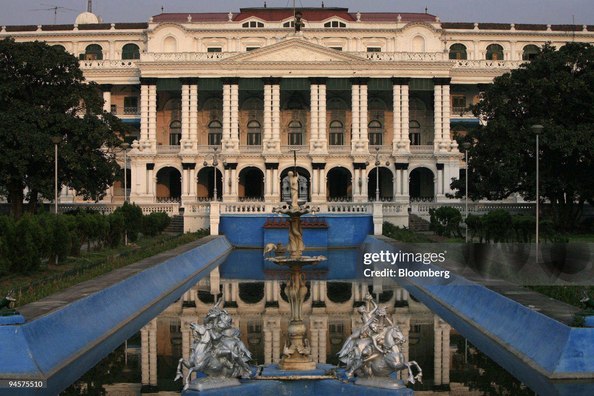

KATHMANDU THE CITY OF GODS
Kathmandu, the capital city of Nepal, holds a captivating history that spans millennia. Originally settled by the Newar people, renowned for their artistic prowess, Kathmandu served as a bustling trading hub along the ancient routes between India and Tibet. Over the centuries, it witnessed the rise and fall of various dynasties, including the Licchavi, Malla, and Shah, each leaving an indelible mark on the city's landscape and culture. Today, Kathmandu stands as a testament to this rich heritage, with its UNESCO-listed Durbar Squares adorned with intricately carved temples and palaces, showcasing the architectural marvels of bygone eras. Amidst the city's bustling streets, one can immerse in a tapestry of diverse cultures, languages, and religions, with Hinduism and Buddhism prevailing as dominant faiths. Festivals, rituals, and ceremonies punctuate the city's calendar, offering a glimpse into its vibrant cultural tapestry.
Kathmandu's uniqueness lies in its blend of diverse cultures, showcased through its vibrant tapestry of Hinduism, Buddhism, and other ethnic traditions, all nestled amidst a backdrop of awe-inspiring architectural wonders like the ancient temples and palaces that adorn its streets. Serving as the gateway to the Himalayas, Kathmandu offers unparalleled opportunities for adventure seekers while retaining its status as a spiritual sanctuary with revered sites such as Swayambhunath and Pashupatinath. Its bustling streets, filled with the aromas of traditional Nepali cuisine and the vibrant colors of bustling markets, reflect a rich heritage and a vibrant present, where every festival and celebration adds to the city's timeless allure, making Kathmandu a destination unlike any other.
Despite rapid modernization, Kathmandu has managed to retain its ancient charm, with traditional markets, artisan workshops, and Newar eateries dotting its urban landscape. Today, Kathmandu stands as a dynamic urban center, pulsating with life, yet deeply rooted in its timeless heritage, attracting travelers from across the globe seeking an authentic cultural experience in the heart of the Himalayas.
Search
Testimonials
"Kathmandu is a city that has something for everyone. From its rich cultural heritage to its bustling markets, it's a place that will leave you with memories to last a lifetime."
- John Doe, Traveler